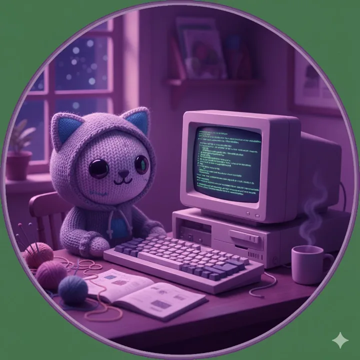

Backend & Systems Development
Object-oriented and procedural software, client-server sockets, data compression algorithms, relational databases, and fast CLI tooling.
Software Developer crafting modern web interfaces, Python & Java backends, and real-time mobile tools.

Core languages, frameworks, and environments I use to ship end-to-end software.
Object-oriented and procedural software, client-server sockets, data compression algorithms, relational databases, and fast CLI tooling.
Responsive web applications, component dashboards, and native Android telemetry UIs.
Embedded sensor integration, Linux environments, version control workflows, and custom workstation assembly.
Practical engineering mindset honed through team hackathons, school-community initiatives, and open-source developer tools.
Open-source tools, mobile dashboards, and fullstack experiments.
Verified language qualifications, technical courses, and academic proficiency badges.
Available for select commissioned web builds, custom tools, and technical collaborations alongside my full-time work. Drop me an email with your idea.